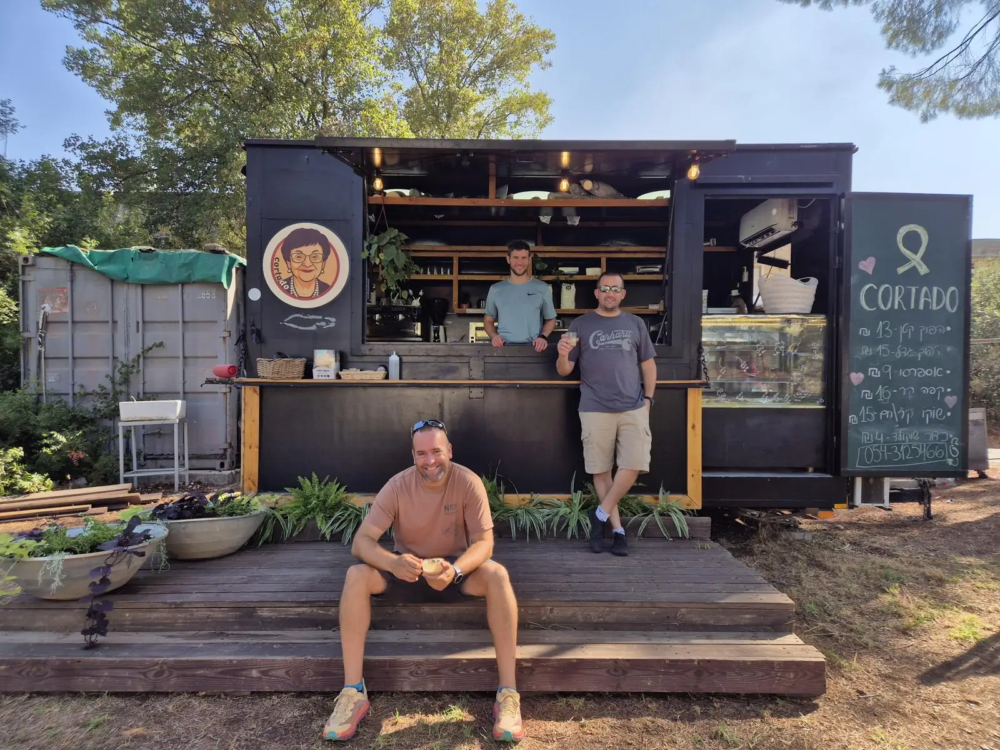

Coffee on the lawn in Kibbutz Snir, by the Banias.
Cortado (קפה קורטדו) is a family-run coffee cart on a shaded lawn at the centre of Kibbutz Snir, in Israel’s Upper Galilee. Open on Saturdays too.
Getting there
- About 8 minutes on foot from the entrance to the Banias waterfall and suspended trail (Hermon Stream Nature Reserve).
- About 5 minutes on foot from the Syrian tank.
- About 10 minutes by car on Road 99 from the Snir Stream (Hasbani) Nature Reserve.
- By car: about 7 minutes to Tel Dan, 15 minutes to Kiryat Shmona and 40 minutes to Mount Hermon.
Inside the kibbutz, drive straight on through the yellow gate and turn right at the grocery shop. The cart is on your left, on the lawn. Parking is free, including accessible parking, and there is room for minibuses.
Opening hours
Hours change from week to week, by season and on holidays. This week’s hours are on the Hebrew page and on Google Maps.
There is no covered seating, and the cart usually does not open in rain. In winter, check Instagram stories or WhatsApp before you set out.
Menu
- Coffee: cortado, hafuch, espresso, americano, macchiato, affogato and iced coffee, with regular or plant-based milk.
- Hot drinks for winter: sachlav, hot cider, hot chocolate and teas.
- Fruit shakes and açaí bowls, both vegan.
- Sandwiches and pizzas.
- Pastries and cakes from the display case, some gluten-free.
The display case changes daily. It is a dairy cart with vegan options. The cart has no kosher certificate; the pastries are kosher. If you have an allergy or coeliac disease, ask at the cart before ordering.
You order and pay at the cart, by cash, card or Bit.
Good to know
- A shaded lawn with a playground opposite.
- Accessible entrance and wheelchair-accessible seating.
- Free Wi-Fi.
- Dogs are welcome and get water.
- Restrooms near the cart.
- Groups by prior arrangement, by WhatsApp or phone.
The story
After two years of evacuation from the north, Nitzan Melman, Shahar Gilad and Amit Marx returned to Snir and set up the cart as something small and local that brings people together. It opened in July 2025.
The inspiration was a grandmother who brought café culture with her from Argentina. Cortado was her drink.